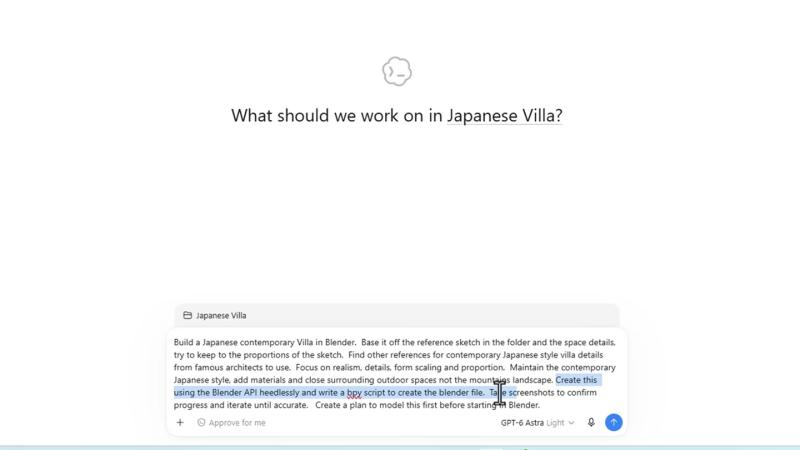
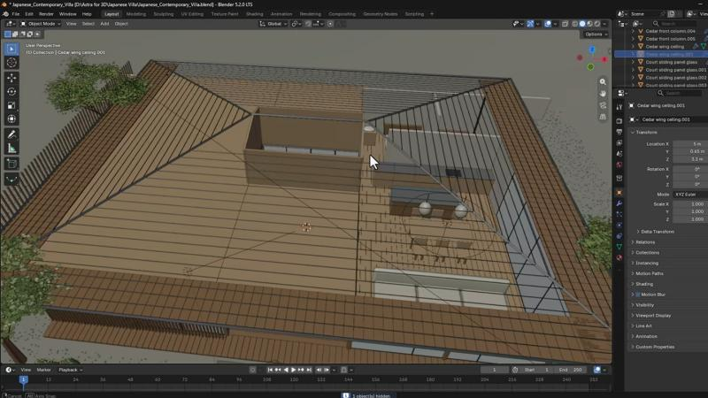
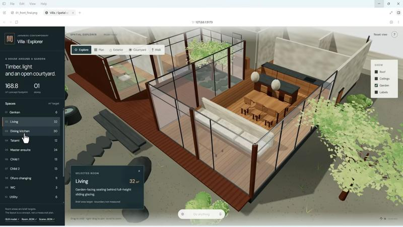
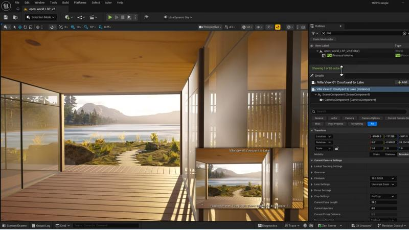

The input was deliberately thin: one hand sketch and a list of rooms with target areas. No plans, no sections, no elevations. The question was how far a current model can take that before it needs real drawings.
Further than expected — and the useful part is not the model. It is that the same source produced three different deliverables: a Blender file, an interactive web app, and a first-person walkthrough in Unreal Engine.
The key decision: scripts, not MCP
There are two ways to let AI drive 3D software. It can control the application directly through an MCP server, or it can write scripts against the API and check its own work from rendered screenshots.
For the Blender stage this used the second. The model never sees the live viewport; it writes bpy scripts, runs them headlessly, renders, looks at the render, and iterates. It is dramatically cheaper in tokens, and for a model of this complexity it is entirely sufficient.
Save MCP for the parts that genuinely need to see and manipulate a live scene. That is the trade-off in one line: scripting for generation, MCP for manipulation.
1. Set up a clean folder and one sketch
Make an empty project folder. Everything generated — scripts, renders, screenshots, the .blend — lands there, and that is also how the model checks itself. Drop in the sketch and have the room schedule ready.
Then this prompt, run through Codex:

Build a Japanese contemporary Villa in Blender. Base it off the reference sketch in the folder and the space details. Try to keep to the proportions of the sketch. Find other references for contemporary Japanese style villa details from famous architects to use. Focus on realism, details, form scaling and proportion. Maintain the contemporary Japanese style, add materials and close surrounding outdoor spaces, not the mountains landscape. Create this using the Blender API headlessly and write a bpy script to create the blender file. Take screenshots to confirm progress and iterate until accurate. Create a plan to model this first before starting in Blender.
Two instructions in there are doing the heavy lifting: use the API headlessly and take screenshots to confirm progress, which makes it self-correcting, and create a plan first, which gives it room to research and reason before it commits.
This ran on the plus plan with Astra on a lower usage setting. You do not need to max the budget for this method.
2. Let it plan, then watch the renders arrive
The planning pass searches for references, works out plausible room sizes, and decides what the villa should be. That matters most when your input is thin — as here. Give it scaled drawings instead and it will use those and be far more literal.

The images that appear are renders of the model, not generated pictures. That distinction is the whole method: because it cannot see Blender, it renders and looks.
Fifteen minutes, start to finish. Roughly half of a five-hour window, about ten per cent of a week's usage.
3. Open the file and check it properly

Clean geometry, furniture, a lighting setup, and extra assets it was not asked for — trees, fences, paths, individual floorboards, roof tiles. Hide the roof and there is a structure, furniture and tatami underneath.
Most importantly it is to scale and it follows the area schedule. That is the claim worth testing on your own brief, and the one that makes this relevant to early-stage work rather than to mood boards.
Doors were missing and furniture arrangement needed a pass. Both are prompts, not problems.
4. Turn the model into an interactive app
Once there is geometry you are not limited to stills. The next prompt asked it to use the Blender API to export a glTF plus the room data as JSON, then build a React app around both.
The glTF is what the web can read; the JSON is what makes rooms selectable and labelled rather than just visible.

About twenty minutes. It hit the five-hour limit mid-build and finished after the reset. The result navigates between views, toggles levels and elements, lists every room with its area, moves the camera to a selected space, and drops into first person.
Materials are flat — nothing was supplied. That is a straightforward fix, and it is a far better client-facing artefact than a folder of renders.
5. Unreal, where MCP earns its cost
For realism and a genuine first-person experience, this is where MCP makes sense. The Unreal MCP plugin is free and the documentation covers the setup. Open the project folder in Explorer, right-click, open PowerShell, type codex.
Start from a sample scene with an existing landscape, not an empty level. The point is to import the villa and then have it procedurally adjust the surrounding context — trees, rocks, paths — through PCG graphs. Starting from nothing means having no assets to work with.


With MCP you converse rather than write one long prompt: import the villa near the lake, add procedural forest and rocks, swap materials for Unreal ones, update the lighting, add first and third-person blueprints, set up camera sequences.
Two hours over two sessions, including iteration. Use MCP for the technical parts — graph setup, blueprint creation, complex placement — rather than trying to generate every detail through it. That is where the cost sits.
What to take from this
- A sketch and an area schedule is a viable starting point. Not a substitute for drawings, but enough for a scaled, organised concept model.
- Scripting beats MCP for generation, by a wide margin, on cost.
- Ask for a plan first. Every time.
- The model is the beginning, not the deliverable. The same source feeding a web app and a real-time scene is the part that changes how you present work.